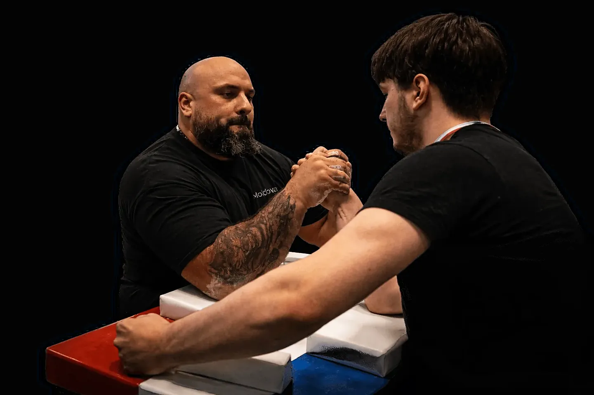
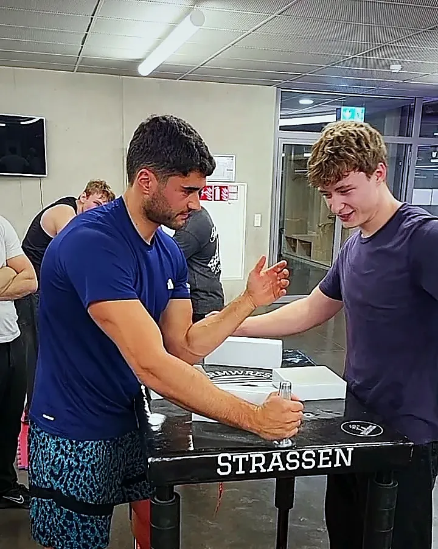
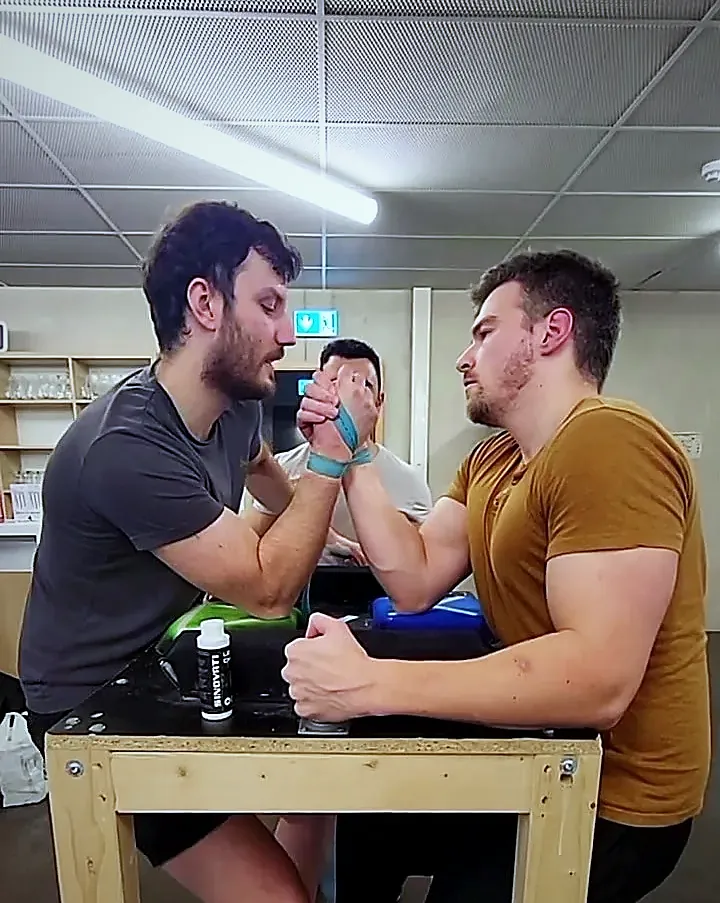
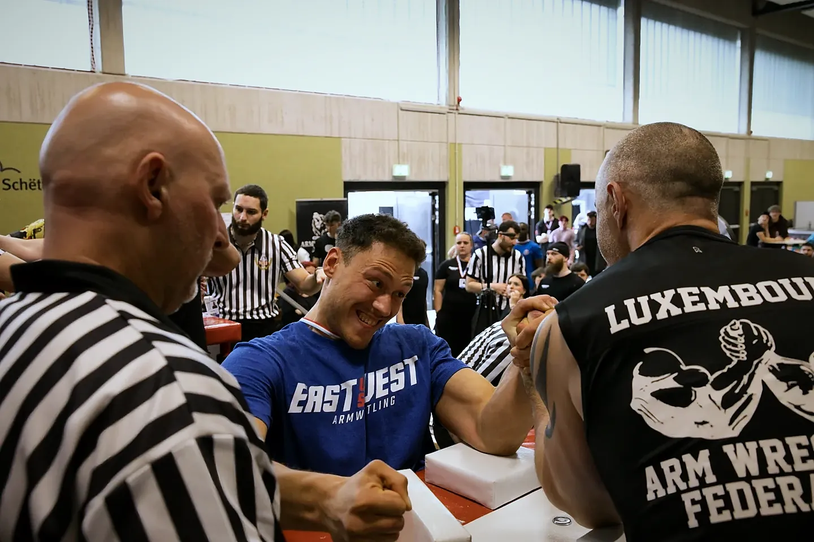
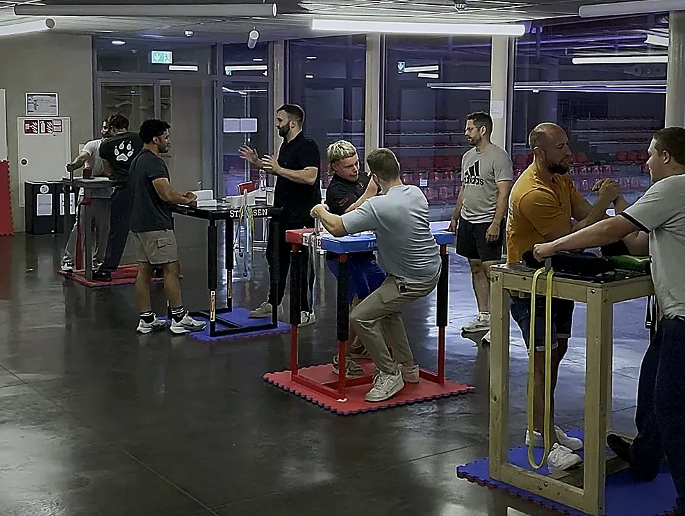

Armwrestling
Club Strassen

Mardi, 19h à 21h30, au CNAM de Strassen.
Centre National des Arts Martiaux, 297 rue de Reckenthal, L-2410 Strassen. Bâtiment principal, 2e étage, salle à droite. En cas de doute, la conciergerie au rez-de-chaussée vous oriente.
en voiture depuis Luxembourg-ville, par la route d’Arlon. Grand parking gratuit.
en bus depuis Hamilius, arrêt Strassen, Hondseck. Puis 10 minutes à pied.
en bus depuis la gare, arrêt Strassen, Schafsstrachen. Puis 5 minutes à pied.
À vélo, comptez 17 minutes depuis le centre. Le bus est gratuit.


Aussi le vendredi à 18h à Munsbach, avec le club Grizzly of Luxembourg : 185 rue Principale, salle polyvalente Hall 2, à 17 minutes en train de Luxembourg. La première séance y est gratuite aussi. Itinéraire vers Munsbach
La première séance est gratuite.
Venez en tenue de sport. Tout le matériel est sur place.

Champions d’Europe 2025.
Un titre remporté sous les couleurs de la fédération luxembourgeoise.
L’Armwrestling Club Strassen est un club de bras de fer affilié à la Luxembourg Armwrestling Federation (LAF), la fédération nationale. Débutants et compétiteurs s’entraînent ensemble, à la même table.
- 2025
- Champions d’EuropeTitre européen remporté avec la fédération luxembourgeoise.
- Chaque année
- Podiums à LuxembourgDes médailles à chaque édition de la compétition internationale de bras de fer du Luxembourg.
- Radio
- RTL et Essentiel RadioLes deux radios ont interviewé la fédération et ses clubs.
- L’équipe
- Deux entraîneurs, un arbitre nationalPascal Kramp et Adrian Simion entraînent à Strassen. Nils Davoine, président du club, est arbitre national. Bogdan Roman préside Grizzly of Luxembourg.

Tout le matériel est sur place.
Tables de compétition, poulies, poignées, élastiques et haltères. Venez en tenue de sport, rien d’autre à apporter.
150 € par an. L’essai est gratuit.
Une séance d’essai, le mardi à Strassen ou le vendredi à Munsbach. Sans engagement.
Venir mardiLa licence de la fédération (LAF) ouvre les deux clubs, toutes les séances et tout le matériel. Elle comprend le t-shirt du club.
Le club participe aussi aux frais d’inscription et de déplacement pour les compétitions européennes.
7e édition au printemps 2027.
La compétition internationale du Luxembourg
À Munsbach, 185 rue Principale. Plus de 100 athlètes et plus de 300 spectateurs. Bras gauche et bras droit, toutes les catégories de poids, hommes et femmes. Les débutants peuvent s’inscrire. La date exacte n’est pas encore fixée.
S’inscrire à la 7e édition Voir la vidéo de la 6e éditionOpen Vendetta
Choisissez un adversaire à votre poids et proposez-lui un match. Le club organise le lieu et la date. Gratuit, dès 14 ans.
Voir les profilsHuit guides pour débuter et progresser.
- Guide du débutantDébuter le bras de fer
- TechniqueLa prise et la technique au bras de fer
- StratégieComment gagner au bras de fer
- CompétitionSe préparer pour une compétition
- SantéPratiquer sans se blesser
- SantéRécupération et tendinites
- ProgrammeS’entraîner au bras de fer à la maison
- GuideLes sports de force au Luxembourg
Entraînement de bras de fer à Strassen Bras de fer à Luxembourg-Ville Club de bras de fer pour débutants Auf Deutsch: Armdrücken Verein in Luxemburg
Sept questions avant de venir.
Faut-il déjà être fort pour commencer ?
Non. Le bras de fer est aussi une affaire de technique et de placement. Un débutant apprend les bases dès la première séance.
Faut-il réserver avant de venir ?
Non. Un message sur WhatsApp avant votre première séance aide quand même le club à vous accueillir.
Que faut-il apporter ?
Une tenue de sport. Le matériel est sur place.
Combien coûte la licence ?
150 € par an. Elle ouvre les deux clubs, toutes les séances et le matériel, et comprend le t-shirt du club. La première séance est gratuite.
Quel club choisir, Strassen ou Munsbach ?
Strassen pour commencer et apprendre la technique, le mardi. Munsbach pour plus de matchs d’entraînement, le vendredi. La même licence ouvre les deux.
Comment venir depuis Luxembourg-ville ?
En voiture, 8 minutes par la route d’Arlon, avec un grand parking gratuit. En bus, lignes 16 ou 11 depuis Hamilius jusqu’à l’arrêt Strassen, Hondseck, puis 10 minutes à pied. Ou ligne 19 depuis la gare jusqu’à l’arrêt Strassen, Schafsstrachen, puis 5 minutes à pied.
Les clubs sont-ils officiels ?
Oui. L’Armwrestling Club Strassen et Grizzly of Luxembourg sont membres de la Luxembourg Armwrestling Federation, la fédération nationale de bras de fer.
On vous attend mardi.
Une question avant de venir ? Écrivez au club.
Armwrestling Club Strassen. Mardi, 19h à 21h30. CNAM, 297 rue de Reckenthal, L-2410 Strassen.